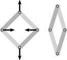

Lecture – Rigidity Theory for Frameworks and Polytopes

| When |
winter semester 2024/25 every Tuesday, slot 10am – 12am (we meet 10:15) October 15th, 2024 – February 11th, 2025 |
| Where\(\;\;\) |
TU Berlin MA 751 (Charlottenburg) |
!! Schedule changed !!
Some lectures have been moved to a different day; the time remains 10:15 – 11:45am. The remaining lectures of 2024 are
Tuesday, November 26(no lecture)- Friday, November 29 (MA 541)
- Tuesday, December 3
- Friday, December 6 (MA 541)
Tuesday, December 10(no lecture)- Tuesday, December 17
To register for the course, visit the course website on ISIS (Information System for Instructors and Students). You can also find the course on Moses.
Description
Rigidity is a classical topic inspired from physics, engineering and architecture; but at the same time full of questions with intrinsically mathematical appeal and beauty.
Classical rigidity theory studies frameworks which are graphs that are embedded in Euclidean space with straight-line edges. One should think of them physically as built from rigid metal rods that are connected at universal joints. The central question of rigidity theory is whether a given framework is flexible (it can be deformed in such a way that all its edges stay of the same length) or rigid (it cannot be deformed in this way). Questions of this nature have a long history in structural engineering, but are also surprisingly ubiquitous in pure mathematics. The question for rigidity turns out intricat, and so many tools have been developed to deal with it, either approximately or in special case. Today mathematicians study many different forms of rigidity (infinitesimal, global, universal, generic, minimal, …) and many different settings for rigidity (bar-joint frameworks, point-hyperplane frameworks, volume rigidity, but also rigidity of manifolds and polytopes). The subject is intrinsically geometric, using tools from and inspiring results in algebraic geometry, projective geometry, hyperbolic geometry and convex geometry.
In this lecture we start with an introduction to the classical rigidity theory of frameworks which still underlies all modern developments. Beginning from the core definitions we explore the first- and second-order theory. We will take a look at different forms and setting for rigidity, such global and generic rigidity, and also point-hyperplane frameworks and some other forms of rigidity. In the second part of the lecture we focus specifically on rigidity questions that arise in the geometric study of polytopes. Here we take a look at classical rigidity results by Cauchy, Dehn, Gluck, Alexandrov and Minkowski, but also modern developments and their connection to Wachspress Geometry.
Scope
The first half of the lecture (roughly week 1 – 8) will focus on the classical rigidity theory of frameworks. The second half (roughly week 9 – 16) will explore the rigidity theory of polytopes. My goal is to talk about the following topics:
Frameworks
- fundamental concept: frameworks, tensegrities, flexes, rigidity (local, global, universal)
- first-order theory: infinitesimal flexes, stresses, rigidity matrix, projective invariance
- second-order theory: stress matrix, second-order rigidity, prestress stability, energy interpretation
- generic rigidity, Maxwell counting condition, rigidity matroid , Laman graphs
- global rigidity and generic global rigidity
- frameworks on the sphere, cylinder etc.
- cross-bracing theorems
- point-hyperplane frameworks, volume rigidity
- symmetry-forced rigidity, reduced counts, pure symmetry rigidity
Polytopes
- rigidity theorems of Cauchy, Dehn and Gluck; Connelly’s flexible spheres, bellow theorem
- polyhedral frameworks, Tutte embeddings, reciprocal frameworks, the Maxwell-Cremona correspondece
- rigidity of triangulated surfaces
- rigidity of non-triangulated surfaces with coplanarity constraints
- coned polytope frameworks, the Wachspress-Izmestiev stress, stress-flex conjecture
- uniqueness theorem’s of Alexandrov, Minkowski, etc.
Prerequisites
The prerequisits are minimal. I will assume a good grasp of linear algebra and some fundamental graph theory (connectivitiy, planarity, handshaking lemma, etc). For the second part of the lecture some background knowledge on polytopes (definition, combinatorics) can be advantageous, but we will also recall the essentials.
Lecture material
I do not intend to provide lecture notes consistently. The material that was made available online can be found here.